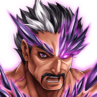
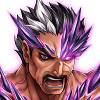
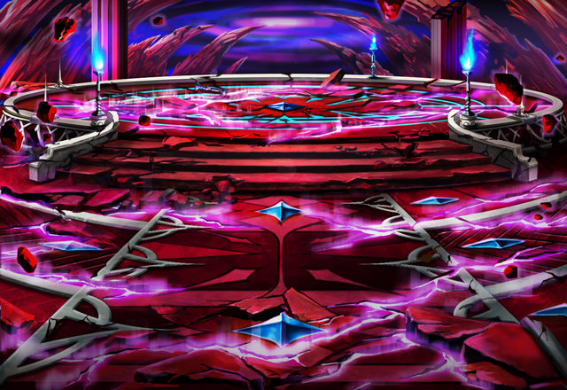
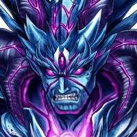
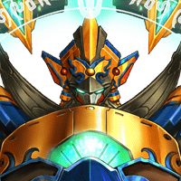
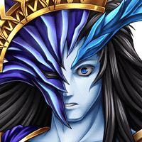

ラナス
今の俺が召喚師ごときに 力負けしただと……！？


ラナス
な……に……？ 力が……離れて……。
？？？
どうやら、お主の身体が、真の召喚の力…… カルナ・マスタの力に
今まで任せてしまってすまなかったな。 ようやく追い付くことができたわい。
カル
ティリスが言ってたように、人間が大神皇の 力を宿すのはやはり無理だったってことか？

ラナス
召喚術よ……どこまでも…… どこまでも、この俺を拒絶するのか！！
ラナス
俺自身の力だけで……貴様らを…… 召喚師を超えてみせる！！
オーン
だが、先程のようなまぐれが、 ２度も起こるとは思うなよ。
ギャレット
クッ……。 ラナス様、ここは一旦退却を！！
ギャレット
貴方様は召喚院に対抗できる唯一の存在。 そして、人類の未来を切り拓く存在。
ギャレット
メル、 お前はラナス様をお守りしなさい！！
カル
また苦しみ出した……！？ 今度は……一体……？
ティリス
何……？ あの人から感じる波動みたいなものは……？



…………。
？？？
どうやら人の身ながら、 そこそこ身体は動くようだな。
？？？
ここは……。 そうか……我を封じた異界か。
サートゥルス
我々が一番恐れていたことが…… 起きてしまったというのか……！？
？？？
ほう……。 貴様らは確か炎皇神と海皇神の神徒の……。
？？？
なるほど……カルナは我を封じるだけでなく 監視役として貴様らも残したというわけか。
アルザ・マスタ
悌神皇…… 貴様らも、その名で我を呼ぶか……。
カル
アルザ・マスタ……！？ 封神竜に封じ込められてたっていう神か！
サートゥルス
なぜだ…… なぜ悌神皇がこの男の中に……？
アルザ・マスタ
この人間が封神竜の力を奪った際、 必然、我の魂もその中に入った。
アルザ・マスタ
そしてこの身体の限界を迎え、 封神竜……カルナの力は放出されたが、
アルザ・マスタ
その時、我も檻より解き放たれたのだ……。
アルザ・マスタ
この男の心に働きかけた甲斐が、 あったというものだ。
グラデンス
お前が……ラナスを変えたというのか！？
アルザ・マスタ
その感情…… 我に怒りを抱いているようだな。
アルザ・マスタ
だが、心に働きかけたと言っても、 心の奥底に眠るものに僅かに干渉しただけ。
アルザ・マスタ
他者に対する強い念などは、 この者自身が生み出したものだ。
アルザ・マスタ
さらに言えば、数多の世界に対して 我が数多く撒いた種の１つというだけの話。
アルザ・マスタ
もっとも、事態がここまで上手く運んだのは 我も想定外のことであったがな。
オーン
そのようなことは……どうでもいい。 俺は貴様をここで始末する！
カル
Shou-chan、連戦になって悪いが、 俺たちも奴を止めるぞ。
カル
離れていても十分に分かるほどの あの禍々しい力……
サートゥルス
封神竜よ、神を封じるその力、 再び使えるか！？
封神竜
我ヲ喚ビシ存在ノチカラ…… 再度発現サセヨウ！！
ラヴァル・サートゥルス
バカな……！！ この力……あり得ぬ！！
アルザ・マスタ
この封神竜が健在ならば、 再び我を封じ込めるとでも思っていたのか？
アルザ・マスタ
魂さえ自由になれば、封神儀などという 玩具まがいのものに力を阻まれる我ではない
セリア
動くことが……できない……。 戦いにすら……ならないなんて……。
アルザ・マスタ
これが本来の神の力というものだ……。
アルザ・マスタ
これまで貴様らが戦ってきた、 まがい物の神とは違う、本当の神のな。
アルザ・マスタ
真の大神たる我の力を恐れながら、 滅するがいい！！
グラデンス
お主、アルザ・マスタの力の中でも 動けるのか……？

…………。
フウシンキ……オレタチハ、 マスター・レダノ、メイレイデキタ。
ＳＣＯＵＴ－Ｆ０３
ゲンザイ、チガウセカイデ、タタカッテイル
ＳＣＯＵＴ－Ｆ０３
マスター……トモダチ・ティリスタチノタメ オマエニ、キョウリョクヲ、ヨウセイスル！
ＳＣＯＵＴ－Ｆ０３
テメー、オレサマヲ、ムシスルトハ、 イイドキョウジャネーカ！
封神機
ＳＣＯＵＴ－Ｆ０３、ＲＥＰＴＯ－ＭＴＸノ 要請ヲ受諾スル。
封神機
コレヨリ本機体ノ、エネルギーヲ、 該当ノ人間ニ送ル……。
仕方がないわ。あの女神…… ティリスたちの危機だって言うなら……。
ルチアナ
あの女神には…… 神狼の件で借りもあるしね。
レダ
別に……。 まあ、あなたも相変わらずだと思ってね。
封神狼
久しぶりだな……人の子らよ。 そして……異界の召喚師よ。
封神狼
遠き世界において…… 我らが封じていた……存在のことだな？
封神狼
お前たちが考えている以上に…… 我ら封神儀の……繋がりは深い。
レダ
今向こうがどういう状況になっているのか、 想像もつかないからね……。
レダ
でも、きっとShou-chanや ティリスの助けにはなっているはずよ……。
この辺りなんだな？ 封神凰が住処としているという場所は。
姫様……あのような者に 協力してよろしいのでしょうか？
スズネ
Shou-chan様たちが危機に 陥っているのであれば、
スズネ
それを助けようと尽力するのは、 当たり前ではないですか！！
サクノシン
もちろん、 そこに異論を唱える気はありません！
サクノシン
拙者も、セリア師匠のためならば、 たとえ火の中！水の中！
サクノシン
拙者が言いたいのは、 そもそもあの“ルジーナ”という男、
サクノシン
本当にセリア師匠たちの仲間なのか？ ……ということです。
スズネ
ですが、あの姿格好は、Shou-chan様たちのものと同じ様式のようですし、
スズネ
何よりもShou-chan様らのことを、 よく知っておられたではないですか。
サクノシン
とてもセリア師匠らの ご友人とは思えませぬ！
サクノシン
拙者には、どうにもよからぬことを 考えているようにしか思えませぬ！
ルジーナ
会ったばかりのテメーらに、 俺様の凄さが理解できねーのは、仕方がねえ
ルジーナ
だが、陰口なら 聞こえないように言いやがれ！！
ルジーナ
まあいい。 目的の場所に着いたようだからな。
ルジーナ
どうやら報告どおり、 本来の意識は封じられているようだな。
ルジーナ
テメーらが支えている封神竜に 異常が発生しているのは感じているな？
ルジーナ
それを正すため、テメーらの力が必要だ。 分かるな？
封神凰
ここにある封神の力…… 今より封神竜が棲まう世界へ送る……。
スズネ
これで封神凰の力はShou-chan様の もとへ送られたのですか？
ルジーナ
やるだけのことはやった。 Shou-chan、あとはテメー次第だ。
ティリス
この力…… 封神機、封神狼、封神凰のものだよ！！
セリア
それらが、 Shou-chanのもとに……！！
セリア
これって、 まさかルジーナとレダが……！？
カル
ルジーナの奴、 “考えがある”って言ってたからな。
カル
それに、これまでの世界の封神儀の力を 利用するなんて、

サートゥルス
……………。
ラヴァル
サートゥルス！！ こうなったら、封神竜も！
サートゥルス
封神竜よ！ 十神が一柱サートゥルスが命じる！
サートゥルス
お前のその力……真の召喚の力を、 Shou-chanに授けよ！！
封神竜
我ノ使命ハ、悌神皇ヲ封ジルコト。 ソノ為ノチカラヲ、コノ者ニ与エヨウ！！
アルザ・マスタ
各封神儀の力……そして封神竜より 授けられたカルナ・マスタの力……
アルザ・マスタ
お前らが言う “真の召喚の力”とやらを得たようだな……
アルザ・マスタ
カルナを倒した者が、彼奴の力を 最も色濃く受け継ぐとは、面白い……。
アルザ・マスタ
ならば……この主神皇アルザ・マスタが 直々に相手をしてやろう……！！
グラデンス
この場でアルザ・マスタと戦えるのは、 Shou-chanのみか……。
グラデンス
いつも、つらい戦いを任せてすまぬ……。
ティリス
なんだってShou-chanは、 私の召喚師だからね！


{kind=link}
{kind=link}
{kind=link}
{kind=link}
{kind=link}
{kind=link}
{kind=link}
{kind=link}
{kind=link}
{kind=link}
{kind=link}
{kind=link}
{kind=link}
{kind=link}
{kind=link}
{kind=link}
{kind=link}
{kind=link}
{kind=link}
{kind=link}
{kind=link}
{kind=link}
{kind=link}